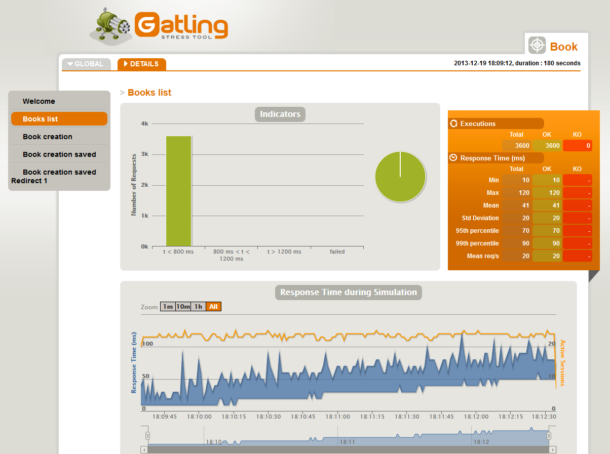
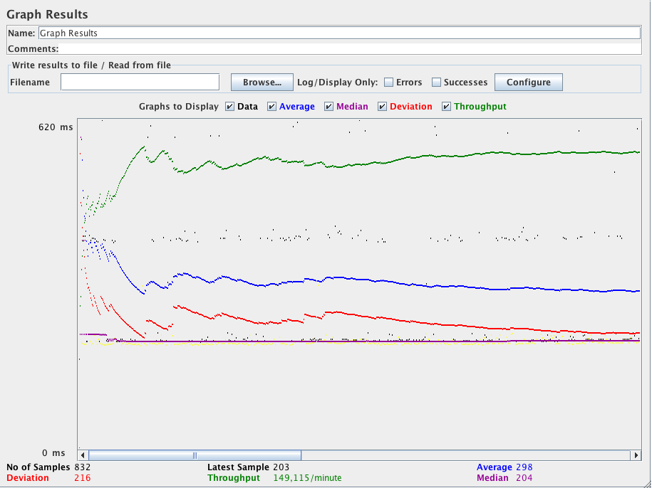

Introduction to Gatling

"Gatling is an open-source load testing framework based on Scala, Akka and Netty." Which is an overly precise way of saying "Gatling is a load testing tool". There are other tools in in the load testing space as well, but I like Gatling for two main reasons 1) the beautiful reports Gatling generates and 2) it has a great Jenkins plugin.
Those beautiful reports
I was sold on Gatling when I saw the reports it generates. Others in the field may be catching up, but when Gatling burst on the scene they were light years ahead of others like JMeter.

Meanwhile in JMeter land you can get this.

The difference is also in the medium they are being presented, HTML vs a Java executable. But given the choice, 10 times out of 10 times I am going with those pretty HTML reports.
Creating a Gatling testing script
The script Gatling uses to generate load on your application is just code, and will be managed in source code accordingly. But the process for creation of the script can be simplified using a recorder. This starts the Gatling executable to run as a proxy and record the clicks you make in your browser. Here is what the UI for Gatling's Recorder looks like.
 The output of this recording session will be what you store in Git to execute as validation for each build.
The output of this recording session will be what you store in Git to execute as validation for each build.
The Recorder does not just record what URLs you browse to, but also the delays between clicks to properly replicate user sequences. So take your time when making a recording. Replicate the tasks as actual users would. And when you test your app, this will recreate those experiences as they happen in the wild.
Running a Gatling testing script
There are two methods to running the script(s) that you have created. Using the Gatling executable or executing Gatling as a Maven. Both generate the exact same reports, but give you the choice for the best way to automate their execution. Using Maven to execute the test script would be the heavier weight option, but integrates nicely for Java projects (as well as Jenkins does really well).
If you have Gatling installed on your machine you will run with gatling.bat or gatling.sh (depending on your system's OS). It will generate some prompts asking you which of your scripts you want to run and what you want to call the generated report.
Running Gatling through Maven, again will generate the same reports, but you don't actually need the Gatling executables installed on the machine running Gatling. Instead a project's pom.xml will have the Gatling dependencies defined. It will look something like this example pom.xml file from Gatling. If you are already working with Maven as your application's build tool this is an excellent piece of synergy to leveage.
What load testing can teach you
A common goal in stress testing an application to is find bottlenecks in the code. But with the ability to bring up entire environments to test each build we can look for choke points in the infrastructure too.
Maybe your application's message queue starts backing up under load. You can ensure it is running with an SSD or more RAM to alleviate that pain. Or you saturate the connection to your SAN under load. These are not necessarily code issues, but they were identified by throwing load at your application.
Along with immediate failures, running a stress test on each build or release of your application(s) will give you charts and graphs over time. Having historical data will open up trends. Is your product page getting slower and slower to load as the Product Managers add more content or features to it? This will give you proof the page is loading slower now than before.
Or worse, the most recent build introduced a two second spike in page processing times. It might be from a new required feature and to a human user it will "feel" slower. But the page going from .5 second to 2.5 seconds is a radical change that will appear on a graph as a "fact" instead of a "feeling".
Alternatives to Gatling
Some alternatives to Gatling would include JMeter and online services like OctoPerf.
Gatling is not all sunshine and roses. It does have some downsides compared to these alternatives. The biggest one is they have the ability, especially the SaaS providers, to apply a distributed load to your app to better simulate real world latency. Running a load test on a local machine can be useful to identify some types of programming bottlenecks, but if you have a networking bottleneck for users in Japan you wouldn't see it in your local testing.
Don't DOS yourself
With a stress testing tool it is important to remember the power you are working with. Changing a script from 10 users to 1000 users is just two more zeros, but could quickly become a self-inflicted denial-of-service (DOS) attack on your own systems. So tread lightly when ramping up the load of your test suites.
Workout
We are going to complete the following actions
- Once again, we will be using our VM to run Gatling. So
vagrant upif you have not already done so. - Fork the demo Gatling Maven project so you have write access to it.
- Configure a new Maven job in Jenkins named
gatling-demowith the "Goals and options" ofgatling:executeto run Gatling. - Manually run the job and see that it works.
- View your new Gatling reports that were generated. If they are not visible in the Jenkins job's page, make sure you added the Post-build Actions of
Track a Gatling load simulation - Change line 55 of
src/test/scala/computerdatabase/BasicSimulation.scala - from
setUp(scn.inject(atOnceUsers(1)).protocols(httpConf)) - to
setUp(scn.inject(rampUsers(10) over (30 seconds)).protocols(httpConf)) - Make sure you
git commitandgit pushthe change